Uma seleção estratégica para vestir
elegância no dia a dia
↓ role para começar
"A elegância não nasce da quantidade de roupas que temos no armário.
Ela nasce das escolhas que fazemos."
Durante muitos anos observando a construção da imagem feminina, percebi que mulheres elegantes compartilham algo em comum: seu guarda-roupa é formado por peças bem escolhidas, versáteis e atemporais.
Este guia nasceu com essa intenção. Aqui você encontrará uma seleção de peças que considero essenciais para construir uma imagem elegante, sofisticada e fácil de combinar no dia a dia. São bases que permitem multiplicar possibilidades e criar composições refinadas com naturalidade.
Ao longo das próximas páginas, apresento cada uma dessas peças, explicando o papel que elas desempenham na construção de uma presença elegante.
Meu desejo é que este material sirva como um ponto de partida — um guia prático para ajudá-la a fazer escolhas mais conscientes e alinhadas com a imagem que deseja transmitir.
Com carinho,
Kelly
A peça que transforma instantaneamente a presença.
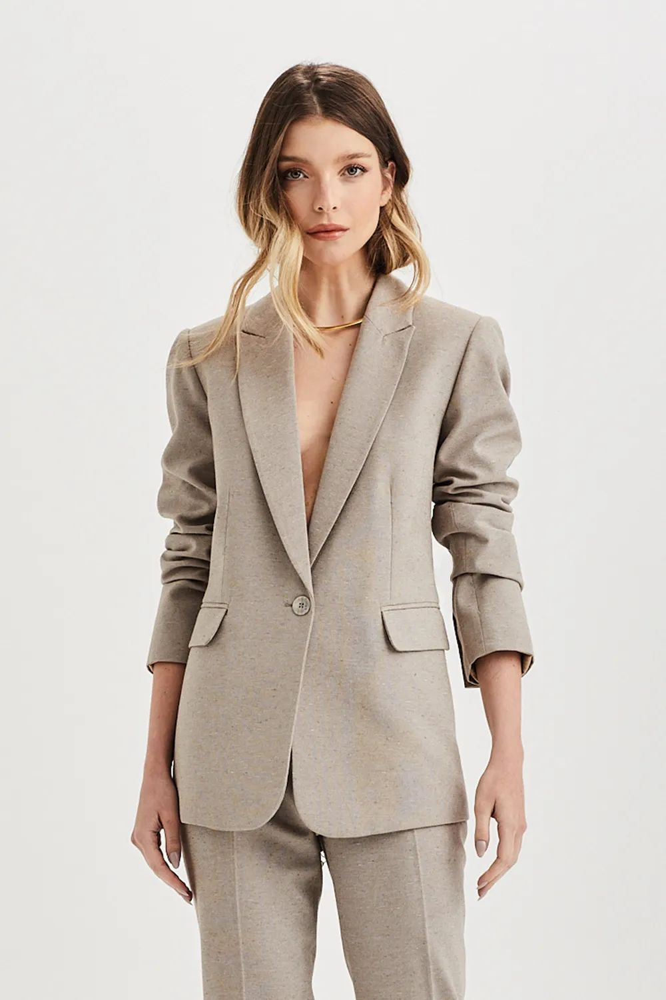
O blazer estruturado é uma das peças mais poderosas do guarda-roupa elegante. Ele cria linhas definidas no corpo e transmite imediatamente organização, presença e sofisticação — mesmo quando combinado com peças simples como jeans ou camiseta.
Um clássico atemporal de sofisticação.
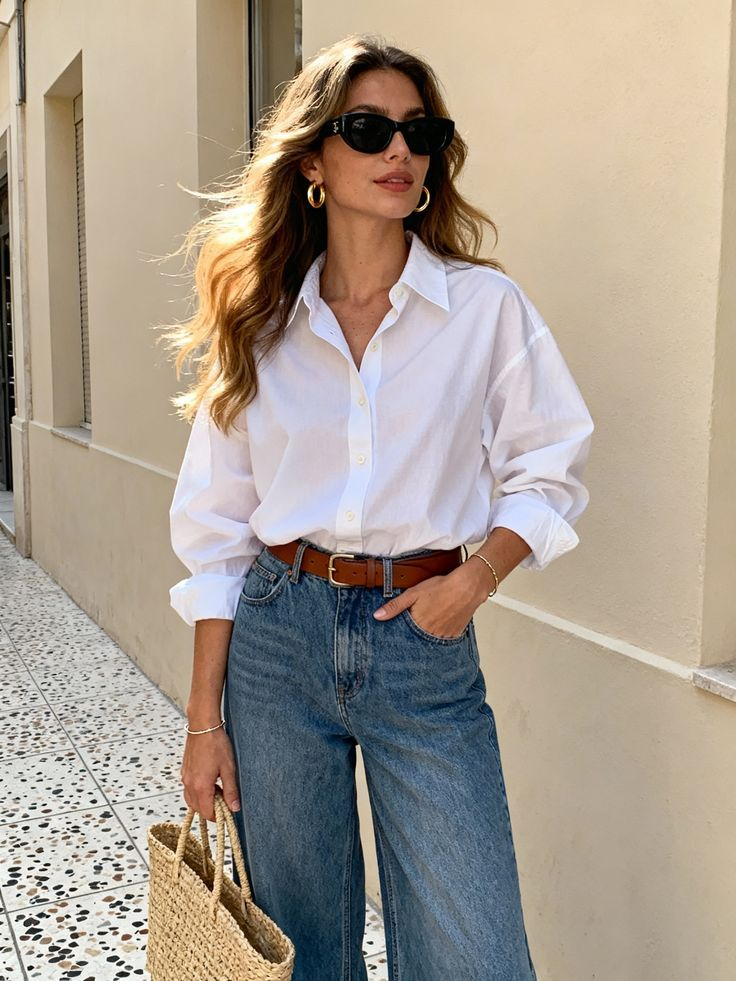
A camisa branca é um clássico absoluto da elegância feminina. Sua estética limpa e atemporal transmite sofisticação natural e permite inúmeras combinações — do ambiente profissional a produções mais casuais refinadas.
Feminilidade e refinamento.
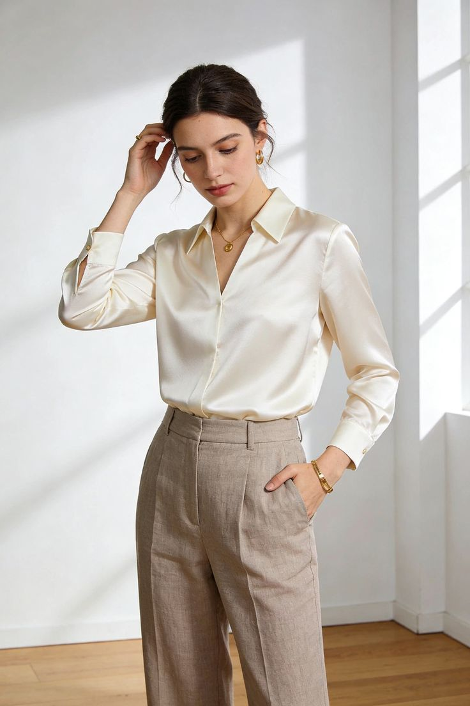
A camisa em tecidos fluidos como seda ou cetim traz feminilidade e delicadeza ao visual. O leve brilho do tecido adiciona sofisticação sem esforço e transforma produções simples em looks mais elegantes.
Estrutura e elegância em uma única peça.
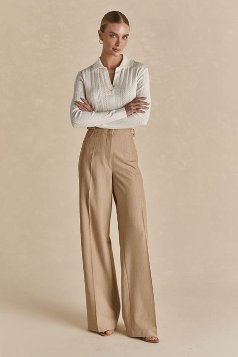
A calça de alfaiataria é uma das peças mais elegantes e versáteis do guarda-roupa feminino. Seu corte estruturado cria uma silhueta mais alinhada e sofisticada, funcionando perfeitamente tanto em ambientes profissionais quanto em produções mais refinadas do dia a dia.
A forma mais sofisticada de usar denim.
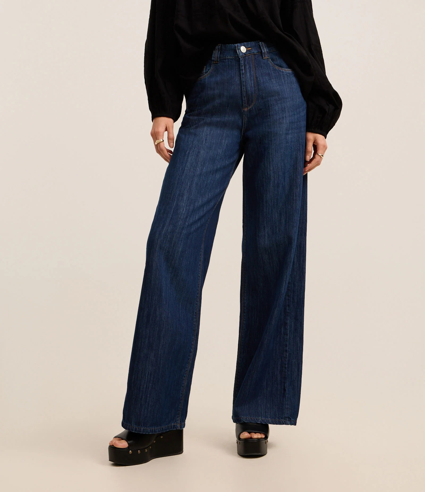
O jeans de lavagem escura é uma das formas mais elegantes de incorporar o denim ao guarda-roupa. Sua tonalidade mais profunda cria um visual mais refinado e versátil, permitindo composições que transitam facilmente entre o casual e o sofisticado.
Feminilidade e sofisticação em perfeita harmonia.
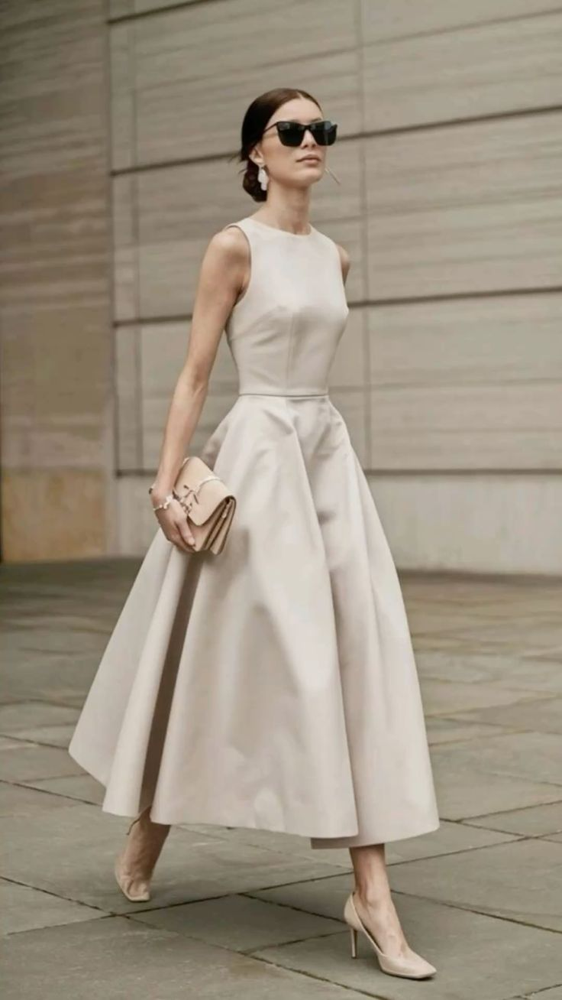
O vestido midi é uma peça que traduz elegância com naturalidade. Seu comprimento equilibrado cria um visual sofisticado sem esforço e permite transitar com facilidade entre diferentes ocasiões, do dia a dia a compromissos mais especiais.
Elegância clássica com movimento e leveza.
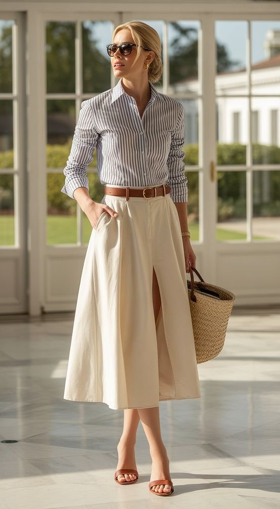
A saia midi é uma peça extremamente versátil dentro de um guarda-roupa elegante. Seu comprimento clássico traz sofisticação imediata e permite composições refinadas tanto com camisas quanto com tricôs e blazers.
Um clássico que eleva qualquer composição.
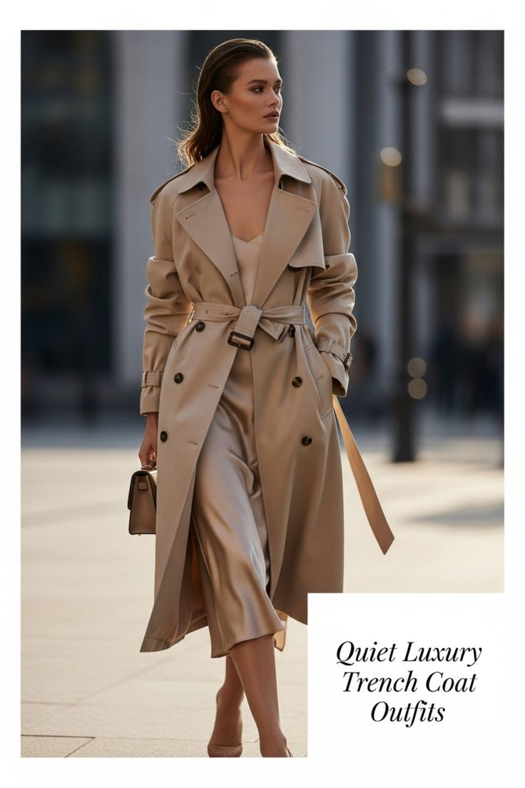
O trench coat é um clássico atemporal do guarda-roupa elegante. Sua modelagem estruturada adiciona sofisticação imediata ao visual e funciona como uma terceira peça que eleva qualquer composição.
Conforto e sofisticação na medida certa.
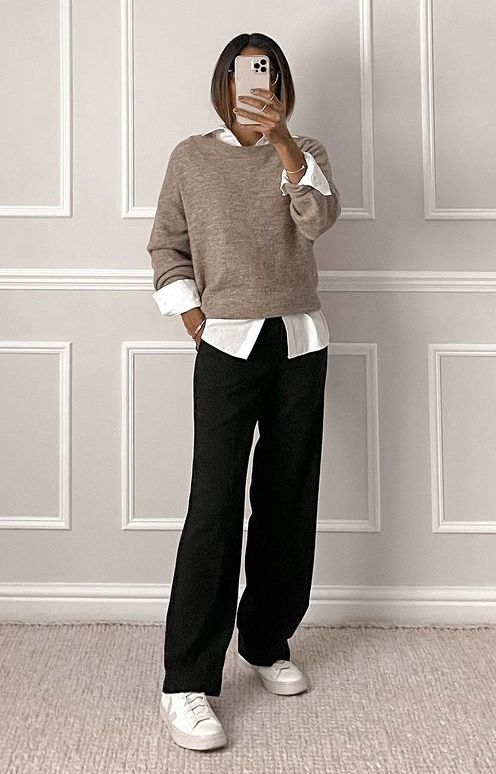
O suéter de tricô fino é uma peça essencial para composições elegantes e confortáveis. Sua textura delicada traz sofisticação ao visual e permite combinações refinadas com camisas, saias ou calças de alfaiataria.
Minimalismo elegante e atemporal.
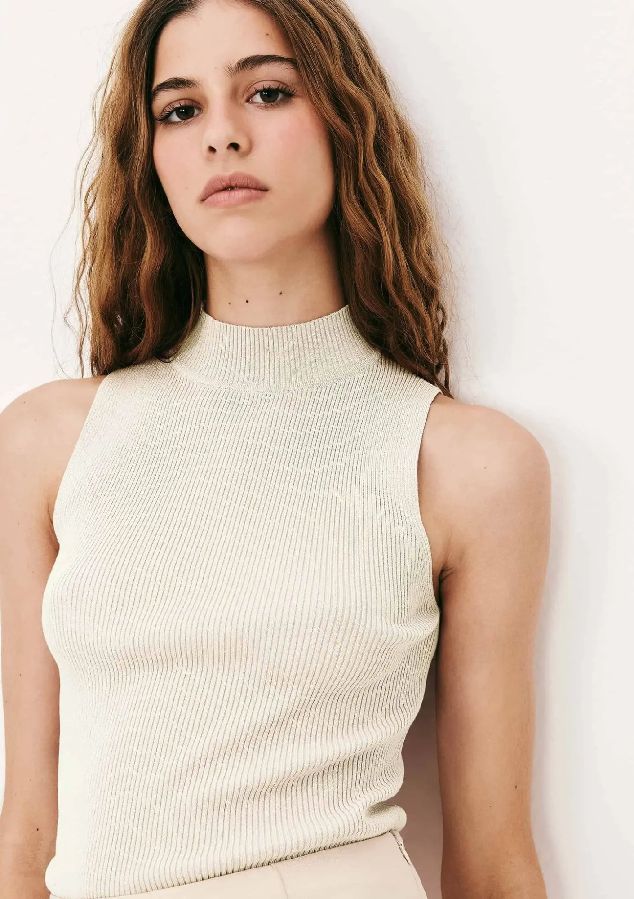
A blusa de gola alta é uma peça clássica da elegância atemporal. Seu design minimalista cria uma estética limpa e sofisticada, funcionando perfeitamente em combinações com alfaiataria, saias ou blazers.
que elevam sua imagem
O sapato que traduz elegância feminina.
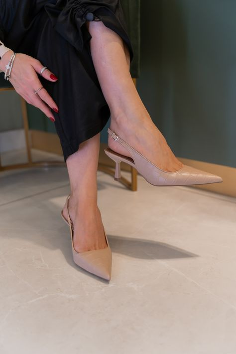
O scarpin de bico fino é um dos sapatos mais clássicos do guarda-roupa elegante. Sua silhueta refinada transmite sofisticação imediata e funciona perfeitamente tanto em ambientes profissionais quanto em produções mais formais.
Leveza e sofisticação para dias mais quentes.
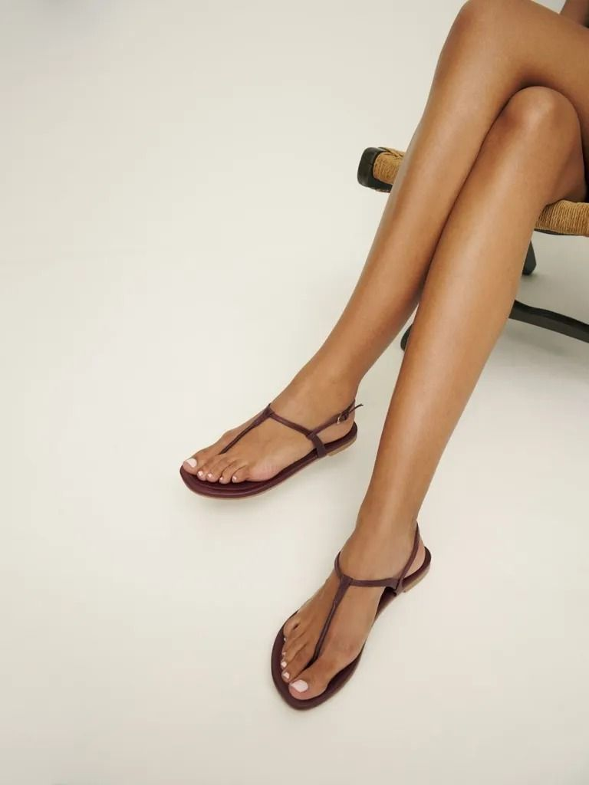
A sandália de design minimalista traz leveza e elegância ao visual. Suas tiras delicadas mantêm o look sofisticado sem pesar na composição, sendo perfeita para produções elegantes em dias mais quentes.
Conforto refinado para o dia a dia.
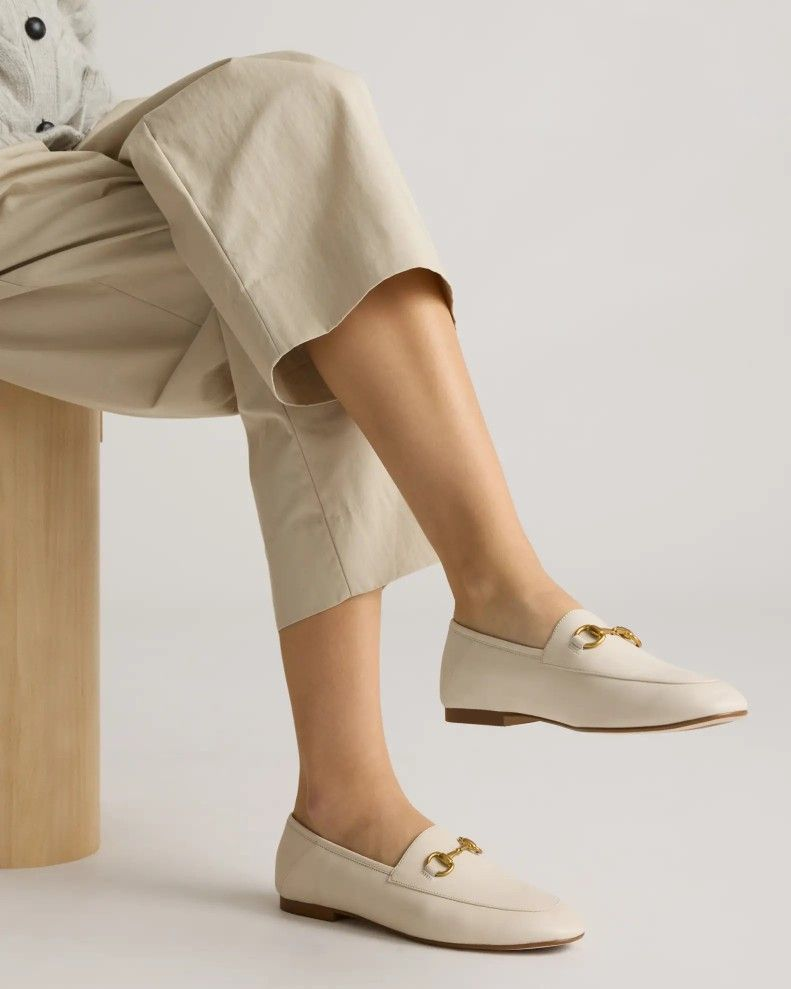
O mocassim é um sapato clássico que combina conforto e sofisticação. Seu design atemporal permite composições elegantes sem a necessidade de salto, sendo uma excelente escolha para looks refinados do dia a dia.
Elegância e presença nos dias mais frios.
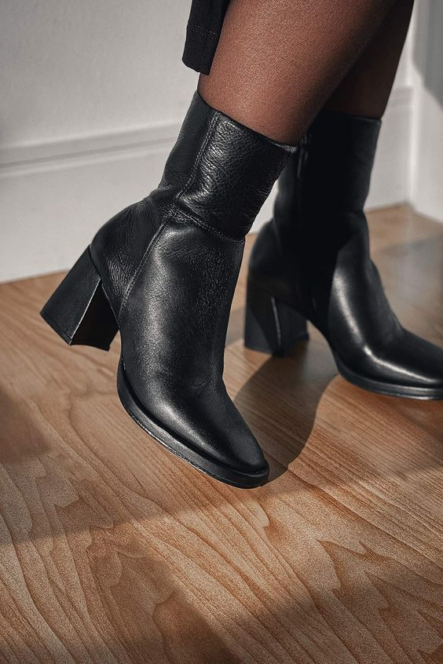
A bota de cano médio é uma peça versátil que adiciona sofisticação aos looks de meia estação e inverno. Sua modelagem elegante permite combinações refinadas com vestidos, saias ou calças.
O acessório que transmite organização e refinamento.
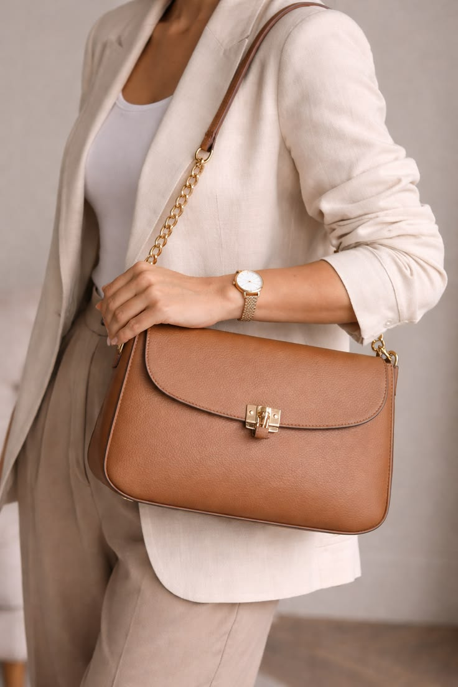
A bolsa estruturada é um dos acessórios que mais influenciam na percepção de elegância. Seu formato firme transmite organização, refinamento e presença, elevando instantaneamente qualquer produção.
Delicadeza e sofisticação em tamanho compacto.
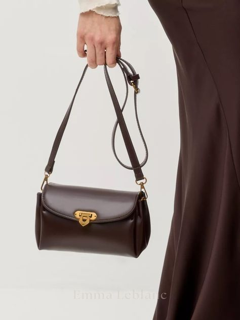
A bolsa pequena é um acessório que adiciona refinamento imediato ao visual. Seu tamanho compacto e design sofisticado complementam produções elegantes com leveza e delicadeza.
O detalhe que transforma a composição.
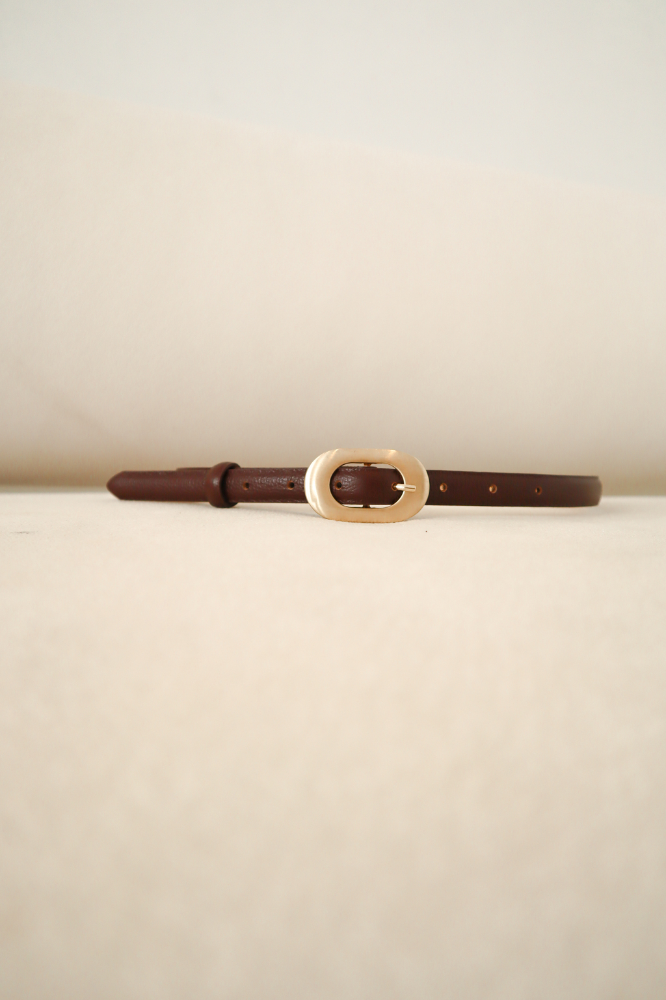
O cinto fino é um detalhe discreto que pode transformar completamente a composição de um look. Além de trazer acabamento ao visual, ele ajuda a definir a silhueta com elegância.
Presença e estilo em um único acessório.
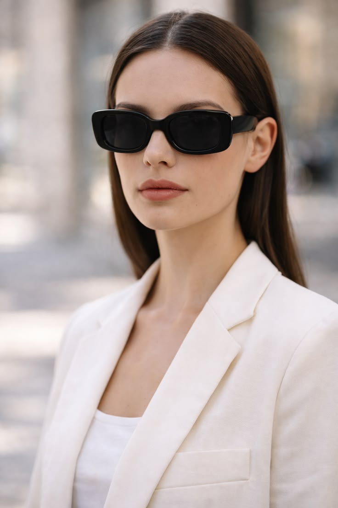
Os óculos de sol são um acessório que pode elevar instantaneamente a presença. Modelos clássicos e bem escolhidos adicionam personalidade e sofisticação ao visual.
Um toque clássico de elegância.
O lenço de seda é um acessório extremamente versátil e sofisticado. Ele pode ser usado no pescoço, no cabelo ou até mesmo na bolsa, adicionando um toque refinado ao visual.
O detalhe que ilumina e finaliza o visual.
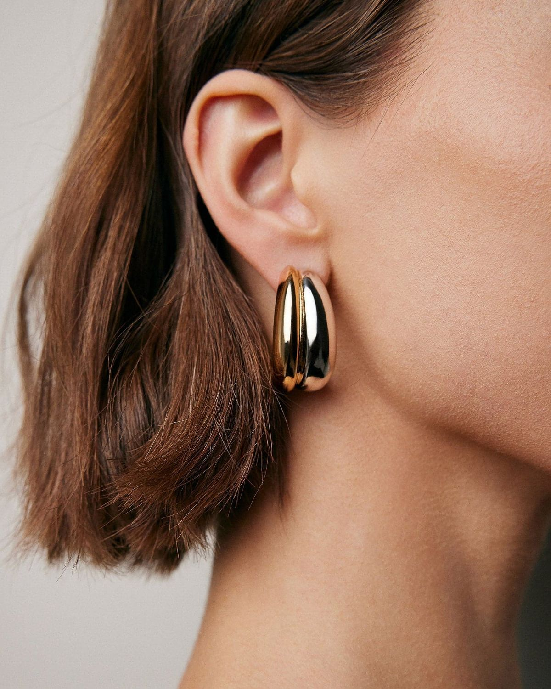
Os brincos clássicos são acessórios essenciais para finalizar um visual elegante. Modelos minimalistas ou atemporais iluminam o rosto e complementam o look com sofisticação.
Pequenos detalhes que fazem toda a diferença.
Ao escolher suas peças, lembre-se de que elegância muitas vezes está nos detalhes. A modelagem, as cores e os acabamentos influenciam diretamente na percepção de sofisticação de um visual. Aqui estão algumas orientações simples que ajudam a construir um guarda-roupa mais elegante e versátil.
Cores neutras facilitam combinações e criam um visual mais sofisticado. Prefira tonalidades como preto, branco, off-white, bege, caramelo, marinho e cinza. Essas cores funcionam como base e permitem composições elegantes com muito mais facilidade.
Peças com design limpo e poucos elementos costumam transmitir mais sofisticação. Evite excesso de fivelas grandes, metais chamativos, muitos recortes e aplicações excessivas. Quanto mais simples e bem estruturada for a peça, mais elegante ela tende a parecer.
Pequenos detalhes fazem grande diferença no resultado final. Observe especialmente a qualidade do tecido, o caimento da peça no corpo, a estrutura da bolsa e o formato do sapato. Peças bem estruturadas criam uma aparência mais refinada e organizada.
Este guia apresenta sugestões de peças e referências de onde encontrá-las, mas você pode escolher os modelos, cores e tamanhos que melhor se adaptam ao seu estilo e ao seu corpo. O mais importante é manter em mente a ideia central: